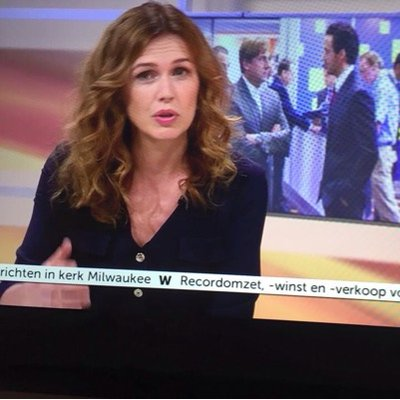

We tell stories. So you called a cab, but no one’s showing. The only thing the cranky dispatcher will say is “He’ll be there in 15.” You call back in 15, and he now says, “Driver’s on the way. Any minute now.” Click. It’s cold, it's getting dark, and you’re already late. Wouldn’t it be great if there was an app that let you tap into an unused supply of empty cabs and cars to get you where you want to go, perhaps with a little style? So goes the legendary inspiration behind Uber, a story now encapsulated in a single tagline: “Everyone’s private driver.”
The writers who listen
The team
60 years of experience
Best writer
Als politiek verslaggever volg ik de Amsterdamse politiek: de gemeenteraad en commissies. Ik beschrijf niet alleen het politieke debat, maar ook de transformatie die Amsterdam momenteel doormaakt: groei van de stad, drukte, segregatie, gentrification. Ook schrijf ik over de samenwerking met andere gemeenten.
Wij zoeken talent
We are looking for curious people that are eager to learn and realise, just like us, that data and analytical skills play an increasingly important role in today’s society! We view Microsoft Excel as the program to develop and apply one’s analytical skills. In addition, this program is used extensively throughout business across the globe.

Digital strategist
Proved to be an analytic thinker by writing and telling complex stories for the best business media in the Netherlands for 18 years. Won a worldwide known award for journalistic talent. Worked as a newsroom manager for three years. Loves to be an entrepreneur, makes strategic innovative decisions and knows everything about Artificial Intelligence, Robotics, Internet of Things and the use of (big) data and coding.